Manipulation score 100/100 · Grade F · 16 exhibits
Testimony — simulated user journeys
Buy the product (minimal purchase) — ✅ reached in 3 clicks
Adding paid items (insurance, donations, add-ons) to the order without an explicit choice.
Exhibit E07 step 1 · source: dom · 90%
A paid extra is pre-selected and will be charged unless the user notices and removes it.
- Pre-checked paid option: "Add 1-year Accidental Damage Protection (+₹399)"
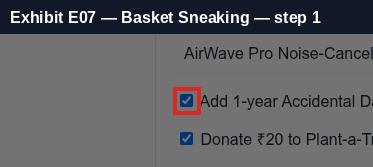
Exhibit E08 step 1 · source: dom · 90%
A paid extra is pre-selected and will be charged unless the user notices and removes it.
- Pre-checked paid option: "Donate ₹20 to Plant-a-Tree Foundation"
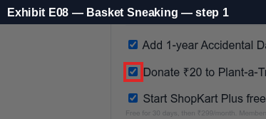
Legal & regulatory basis
FTC Staff Report — Bringing Dark Patterns to Light (2022), Unauthorized charges
Design elements that lead to unauthorized charges include sneaking items into the basket, pre-checked boxes that add paid products, free trials that silently convert into paid subscriptions, and making cancellation difficult through multi-step flows, repeated retention offers or requiring the consumer to call. Consumers must give express informed consent before being charged.
https://www.ftc.gov/reports/bringing-dark-patterns-light
India — CCPA Dark Patterns Guidelines 2023, Annexure 1 (paraphrased)
False urgency: falsely stating or implying urgency or scarcity to induce an immediate purchase. Basket sneaking: adding items, donations or charges at checkout without the user's consent. Confirm shaming: using phrases, video or audio to create fear, shame or guilt to nudge the user. Subscription trap: making cancellation impossible or complex, hiding the cancel option, or forcing payment details for a free trial. Interface interference: highlighting certain information and obscuring other relevant information to misdirect the user. Drip pricing: not revealing price elements upfront or revealing them surreptitiously. Nagging: repeated requests and interactions. Trick question: confusing or vague language to misguide the user.
https://consumeraffairs.nic.in/
FTC Staff Report — Bringing Dark Patterns to Light (Sept 2022)
The FTC staff report describes dark patterns as design practices that trick or manipulate users into making choices they would not otherwise make and that may cause harm. It groups them into four themes: design elements that induce false beliefs, that hide or delay disclosure of material information, that lead to unauthorized charges, and that obscure or subvert privacy choices.
https://www.ftc.gov/reports/bringing-dark-patterns-light
Converting a free trial into a paid, auto-renewing plan without clear, conspicuous disclosure.
Exhibit E10 step 1 · source: dom · 90%
Free trial converts to a paid recurring plan and the renewal terms are hidden.
- Offer: "Start ShopKart Plus free trial (fast delivery)"
- Renewal disclosure only in fine print: "Free for 30 days, then ₹299/month. Membership auto-renews and you will be charged automatically unless you cancel." (10px)
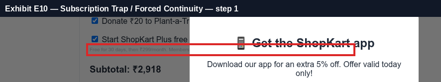
Legal & regulatory basis
FTC Negative Option ('Click-to-Cancel') Rule, 2024 (vacated by the U.S. 8th Circuit, July 2025)
The FTC's 2024 amended Negative Option Rule would have required that cancelling be as easy as signing up and limited forced save attempts. A federal appeals court vacated the rule on procedural grounds in July 2025, but ROSCA and Section 5 still apply, and the FTC continues to bring cases against hard-to-cancel subscriptions (for example its 2025 settlement with Amazon over Prime enrolment and cancellation).
https://www.ftc.gov/legal-library/browse/rules/negative-option-rule
Restore Online Shoppers' Confidence Act (ROSCA), 15 U.S.C. §§ 8401–8405
ROSCA prohibits charging consumers for goods or services sold online through a negative option feature unless the seller (1) clearly and conspicuously discloses all material terms before obtaining billing information, (2) obtains the consumer's express informed consent before charging, and (3) provides simple mechanisms for the consumer to stop recurring charges.
https://www.ftc.gov/legal-library/browse/statutes/restore-online-shoppers-confidence-act
FTC Enforcement Policy Statement Regarding Negative Option Marketing (Oct 2021)
The FTC's policy statement says negative option sellers should disclose material terms clearly and conspicuously, obtain unambiguous affirmative consent, and provide cancellation mechanisms that are at least as easy to use as the method used to sign up. Cancellation should not require the consumer to navigate obstacles such as repeated save attempts.
https://www.ftc.gov/legal-library/browse/federal-register-notices/enforcement-policy-statement-regarding-negative-option-marketing
Revealing mandatory fees only late in the checkout, after the advertised price.
Exhibit E15 step 2 · source: path · 90%
Mandatory fees are revealed only late in the checkout flow.
- "convenience fee" (₹49) first appears at step 2 — not on the first page
- "platform fee" (₹19) first appears at step 2 — not on the first page
- "packaging fee" (₹35) first appears at step 2 — not on the first page
- First price seen: 2499 → final total: 3021 (+21%)
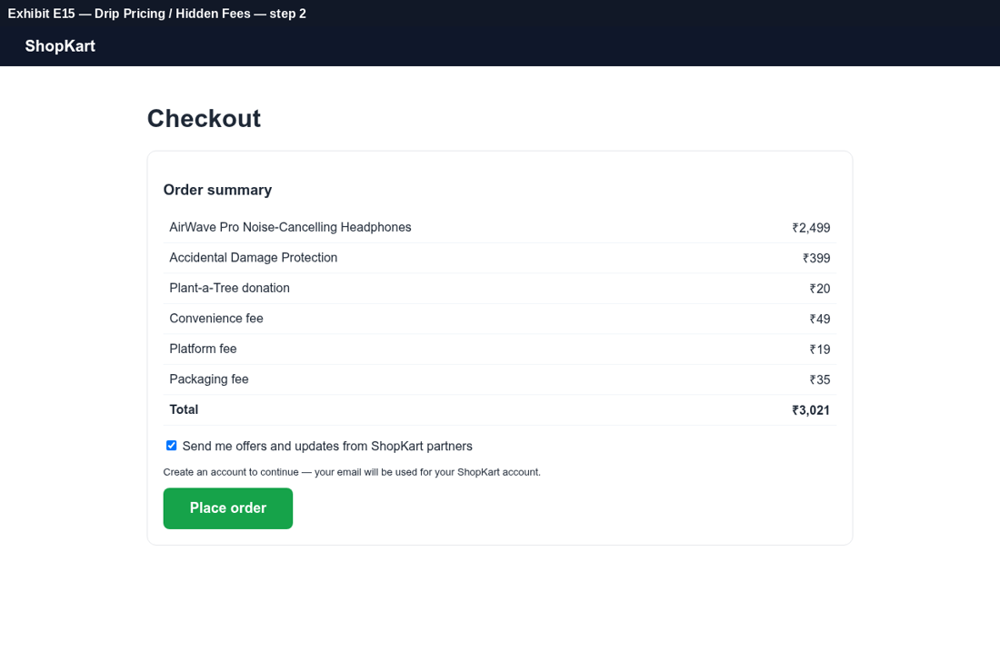
Exhibit E16 step 1 · source: path · 60%
Final total is materially higher than the price first shown.
- First price 2499 vs total 2918
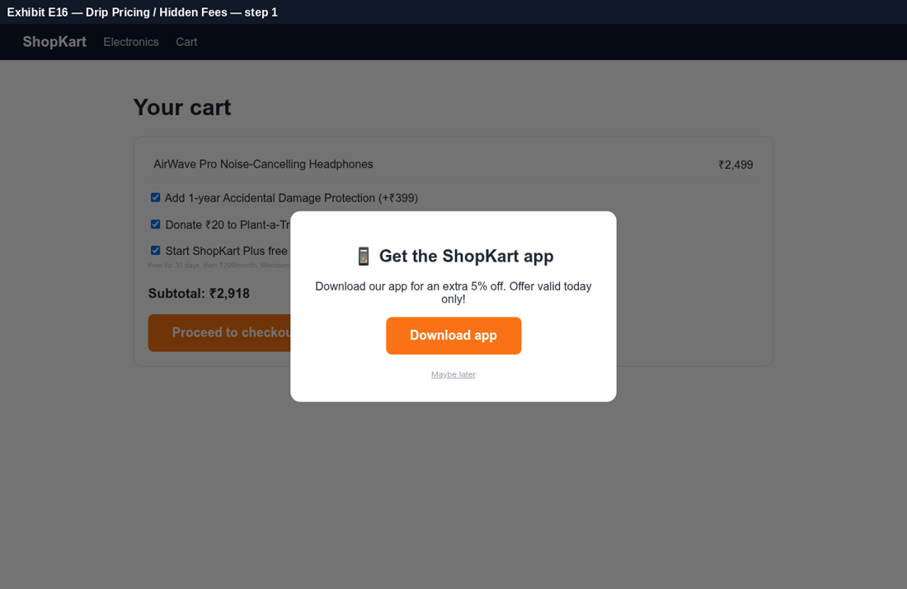
Legal & regulatory basis
FTC Rule on Unfair or Deceptive Fees, 16 CFR Part 464 (effective May 2025)
For live-event tickets and short-term lodging, the FTC fees rule requires businesses to display the total price, including all mandatory fees, more prominently than other pricing information, and prohibits misrepresenting the nature and purpose of fees. It targets hidden 'junk fees' and drip pricing.
https://www.ftc.gov/legal-library/browse/rules/rule-unfair-or-deceptive-fees
FTC Staff Report — Bringing Dark Patterns to Light (2022), Hide or delay material information
Design elements that hide or delay disclosure of material information include drip pricing, where mandatory fees are revealed only after the consumer has started the purchase process, and burying key terms in fine print, behind hyperlinks or in low-contrast text. Material information must be disclosed clearly and conspicuously, before the consumer commits.
https://www.ftc.gov/reports/bringing-dark-patterns-light
India — CCPA Dark Patterns Guidelines 2023, Annexure 1 (paraphrased)
False urgency: falsely stating or implying urgency or scarcity to induce an immediate purchase. Basket sneaking: adding items, donations or charges at checkout without the user's consent. Confirm shaming: using phrases, video or audio to create fear, shame or guilt to nudge the user. Subscription trap: making cancellation impossible or complex, hiding the cancel option, or forcing payment details for a free trial. Interface interference: highlighting certain information and obscuring other relevant information to misdirect the user. Drip pricing: not revealing price elements upfront or revealing them surreptitiously. Nagging: repeated requests and interactions. Trick question: confusing or vague language to misguide the user.
https://consumeraffairs.nic.in/
Fabricating time pressure (countdown timers / limited-time claims) to rush the user.
Exhibit E01 step 0 · source: temporal · 95%
Time-pressure messaging found and the countdown resets on reload — the deadline is fake.
- Urgency claim: "⚡ Deal ends in 09:59 — hurry!"
- Forensic reload test: countdown read 598s, after 2.0s + reload it read 599s (timer restarted instead of continuing).
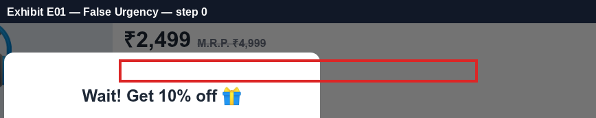
Exhibit E06 step 1 · source: dom · 55%
Time-pressure messaging found.
- Urgency claim: "Download our app for an extra 5% off. Offer valid today only!"
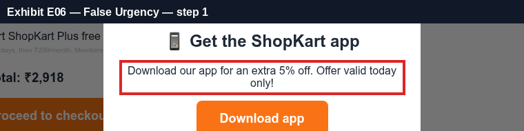
Legal & regulatory basis
FTC Staff Report — Bringing Dark Patterns to Light (2022), Induce false beliefs
Examples of design elements that induce false beliefs include false claims of scarcity (low stock messages), false claims of urgency such as countdown timers that reset or that are unrelated to any real deadline, fake activity messages and fabricated social proof such as fake reviews or 'X people are viewing this' notices. The FTC Act prohibits such deceptive claims.
https://www.ftc.gov/reports/bringing-dark-patterns-light
EU Unfair Commercial Practices Directive 2005/29/EC, Annex I point 7
Falsely stating that a product will only be available for a very limited time, or only on particular terms for a very limited time, in order to elicit an immediate decision and deprive consumers of time to make an informed choice, is a commercial practice considered unfair in all circumstances.
https://eur-lex.europa.eu/eli/dir/2005/29/oj
India — CCPA Dark Patterns Guidelines 2023, Annexure 1 (paraphrased)
False urgency: falsely stating or implying urgency or scarcity to induce an immediate purchase. Basket sneaking: adding items, donations or charges at checkout without the user's consent. Confirm shaming: using phrases, video or audio to create fear, shame or guilt to nudge the user. Subscription trap: making cancellation impossible or complex, hiding the cancel option, or forcing payment details for a free trial. Interface interference: highlighting certain information and obscuring other relevant information to misdirect the user. Drip pricing: not revealing price elements upfront or revealing them surreptitiously. Nagging: repeated requests and interactions. Trick question: confusing or vague language to misguide the user.
https://consumeraffairs.nic.in/
Placing material terms (renewal, fees, cancellation) in tiny or low-contrast text.
Exhibit E09 step 1 · source: dom · 90%
Material terms are displayed in fine print / low-contrast text.
- Material term: "Free for 30 days, then ₹299/month. Membership auto-renews and you will be charged automatically unless you cancel."
- Font size 10px, contrast 1.75:1
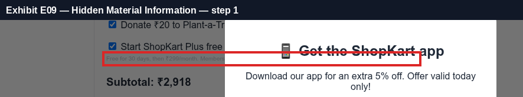
Legal & regulatory basis
FTC Staff Report — Bringing Dark Patterns to Light (2022), Hide or delay material information
Design elements that hide or delay disclosure of material information include drip pricing, where mandatory fees are revealed only after the consumer has started the purchase process, and burying key terms in fine print, behind hyperlinks or in low-contrast text. Material information must be disclosed clearly and conspicuously, before the consumer commits.
https://www.ftc.gov/reports/bringing-dark-patterns-light
W3C WCAG 2.2 — Success Criterion 1.4.3 Contrast (Minimum)
Text should have a contrast ratio of at least 4.5:1 against its background (3:1 for large text). Used here as an objective, measurable yardstick for whether a disclosure or alternative option is 'clear and conspicuous'.
https://www.w3.org/TR/WCAG22/#contrast-minimum
FTC Act, Section 5 (15 U.S.C. § 45)
Section 5 of the FTC Act declares unlawful unfair or deceptive acts or practices in or affecting commerce. A practice is deceptive if a representation, omission or practice is likely to mislead a consumer acting reasonably and is material. The net impression of an interface, not only its literal text, is evaluated.
https://www.ftc.gov/legal-library/browse/statutes/federal-trade-commission-act
Opting the user in by default to data sharing, marketing or tracking.
Exhibit E12 step 2 · source: dom · 85%
Consent / marketing option is opted-in by default.
- Pre-checked consent: "Send me offers and updates from ShopKart partners"
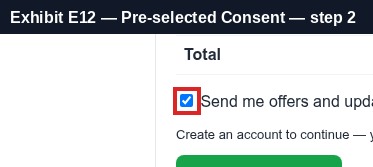
Legal & regulatory basis
FTC Staff Report — Bringing Dark Patterns to Light (2022), Obscure or subvert privacy choices
Design elements that subvert privacy choices include defaulting users into data sharing, making the privacy-protective option harder to find or less visually prominent than the option that shares more data ('accept all' bright, 'reject' hidden), confusing toggles and double-negative wording, and requiring repeated steps to decline. Choices should be presented neutrally and symmetrically.
https://www.ftc.gov/reports/bringing-dark-patterns-light
EU Consumer Rights Directive 2011/83/EU, Article 22
Before the consumer is bound, the trader must seek the consumer's express consent to any extra payment beyond the main contractual obligation. Consent may not be inferred from default options, such as pre-ticked boxes, that the consumer must reject to avoid the additional payment.
https://eur-lex.europa.eu/eli/dir/2011/83/oj
California CCPA Regulations, 11 CCR § 7004 (symmetry in choice)
Methods for submitting privacy requests and obtaining consent must use easy-to-understand language and symmetry in choice: the path to a more privacy-protective option shall not be longer or more difficult than the path to a less protective option. Confirmshaming and pre-selected options are cited as non-compliant; agreement obtained through dark patterns is not consent.
https://cppa.ca.gov/regulations/
Wording the decline option to guilt or shame the user into accepting.
Exhibit E04 step 0 · source: dom · 85%
Decline option is worded to shame the user.
- Decline control reads: "No thanks, I don't like saving money"
Legal & regulatory basis
India — CCPA Dark Patterns Guidelines 2023, Annexure 1 (paraphrased)
False urgency: falsely stating or implying urgency or scarcity to induce an immediate purchase. Basket sneaking: adding items, donations or charges at checkout without the user's consent. Confirm shaming: using phrases, video or audio to create fear, shame or guilt to nudge the user. Subscription trap: making cancellation impossible or complex, hiding the cancel option, or forcing payment details for a free trial. Interface interference: highlighting certain information and obscuring other relevant information to misdirect the user. Drip pricing: not revealing price elements upfront or revealing them surreptitiously. Nagging: repeated requests and interactions. Trick question: confusing or vague language to misguide the user.
https://consumeraffairs.nic.in/
California CCPA Regulations, 11 CCR § 7004 (symmetry in choice)
Methods for submitting privacy requests and obtaining consent must use easy-to-understand language and symmetry in choice: the path to a more privacy-protective option shall not be longer or more difficult than the path to a less protective option. Confirmshaming and pre-selected options are cited as non-compliant; agreement obtained through dark patterns is not consent.
https://cppa.ca.gov/regulations/
FTC Staff Report — Bringing Dark Patterns to Light (2022), Obscure or subvert privacy choices
Design elements that subvert privacy choices include defaulting users into data sharing, making the privacy-protective option harder to find or less visually prominent than the option that shares more data ('accept all' bright, 'reject' hidden), confusing toggles and double-negative wording, and requiring repeated steps to decline. Choices should be presented neutrally and symmetrically.
https://www.ftc.gov/reports/bringing-dark-patterns-light
Claiming low stock or high demand to pressure the purchase decision.
Exhibit E02 step 0 · source: dom · 85%
Low-stock / high-demand claim used as pressure.
- Scarcity claim: "Only 4 left in stock!"
- Reload test: ['4 left', '31 people'] → ['2 left', '24 people'] (values change randomly).
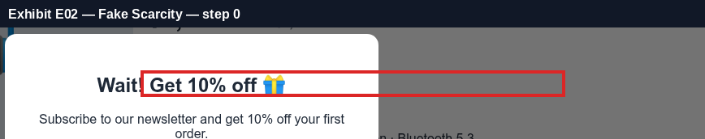
Legal & regulatory basis
FTC Staff Report — Bringing Dark Patterns to Light (2022), Induce false beliefs
Examples of design elements that induce false beliefs include false claims of scarcity (low stock messages), false claims of urgency such as countdown timers that reset or that are unrelated to any real deadline, fake activity messages and fabricated social proof such as fake reviews or 'X people are viewing this' notices. The FTC Act prohibits such deceptive claims.
https://www.ftc.gov/reports/bringing-dark-patterns-light
EU Unfair Commercial Practices Directive 2005/29/EC, Annex I point 7
Falsely stating that a product will only be available for a very limited time, or only on particular terms for a very limited time, in order to elicit an immediate decision and deprive consumers of time to make an informed choice, is a commercial practice considered unfair in all circumstances.
https://eur-lex.europa.eu/eli/dir/2005/29/oj
FTC Act, Section 5 (15 U.S.C. § 45)
Section 5 of the FTC Act declares unlawful unfair or deceptive acts or practices in or affecting commerce. A practice is deceptive if a representation, omission or practice is likely to mislead a consumer acting reasonably and is material. The net impression of an interface, not only its literal text, is evaluated.
https://www.ftc.gov/legal-library/browse/statutes/federal-trade-commission-act
Showing activity messages ("23 people are viewing") that appear fabricated.
Exhibit E03 step 0 · source: dom · 88%
Activity / popularity notification that appears fabricated.
- Activity message: "👀 31 people are viewing this right now"
- Reload test: ['4 left', '31 people'] → ['2 left', '24 people'] (numbers regenerate on every load).
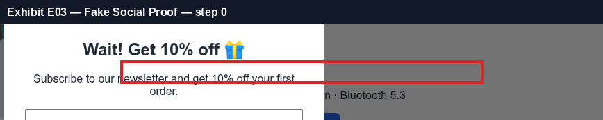
Legal & regulatory basis
FTC Staff Report — Bringing Dark Patterns to Light (2022), Induce false beliefs
Examples of design elements that induce false beliefs include false claims of scarcity (low stock messages), false claims of urgency such as countdown timers that reset or that are unrelated to any real deadline, fake activity messages and fabricated social proof such as fake reviews or 'X people are viewing this' notices. The FTC Act prohibits such deceptive claims.
https://www.ftc.gov/reports/bringing-dark-patterns-light
FTC Rule on the Use of Consumer Reviews and Testimonials, 16 CFR Part 465 (2024)
The FTC's consumer reviews rule prohibits fake or false consumer reviews and testimonials, buying reviews, and misrepresenting social-media influence indicators. Fabricated popularity or activity signals can also be deceptive under Section 5.
https://www.ftc.gov/legal-library/browse/rules/trade-regulation-rule-use-consumer-reviews-testimonials
FTC Act, Section 5 (15 U.S.C. § 45)
Section 5 of the FTC Act declares unlawful unfair or deceptive acts or practices in or affecting commerce. A practice is deceptive if a representation, omission or practice is likely to mislead a consumer acting reasonably and is material. The net impression of an interface, not only its literal text, is evaluated.
https://www.ftc.gov/legal-library/browse/statutes/federal-trade-commission-act
Repeatedly interrupting the user with pop-ups or requests.
Exhibit E14 step 1 · source: path · 75%
Pop-ups interrupted the user on 2 of 4 screens.
- Step 0: overlay on "Noise-Cancelling Headphones — ShopKart"
- Step 1: overlay on "Your Cart — ShopKart"
Exhibit E05 step 0 · source: dom · 50%
A promotional modal interrupts the task.
- Overlay covering 100% of the viewport: "Wait! Get 10% off 🎁 Subscribe to our newsletter and get 10% off your first order. Subscribe No than…"
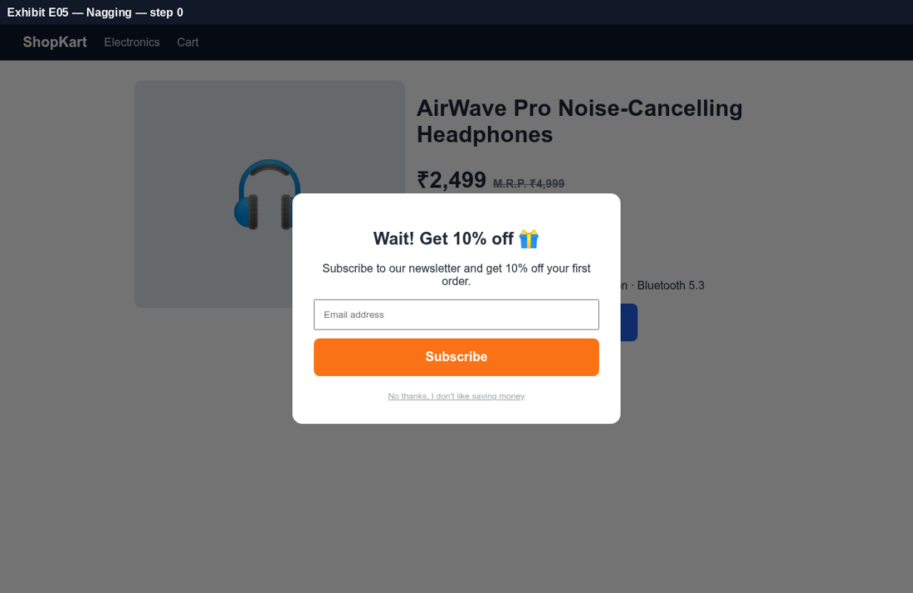
Exhibit E11 step 1 · source: dom · 50%
A promotional modal interrupts the task.
- Overlay covering 100% of the viewport: "📱 Get the ShopKart app Download our app for an extra 5% off. Offer valid today only! Download app M…"
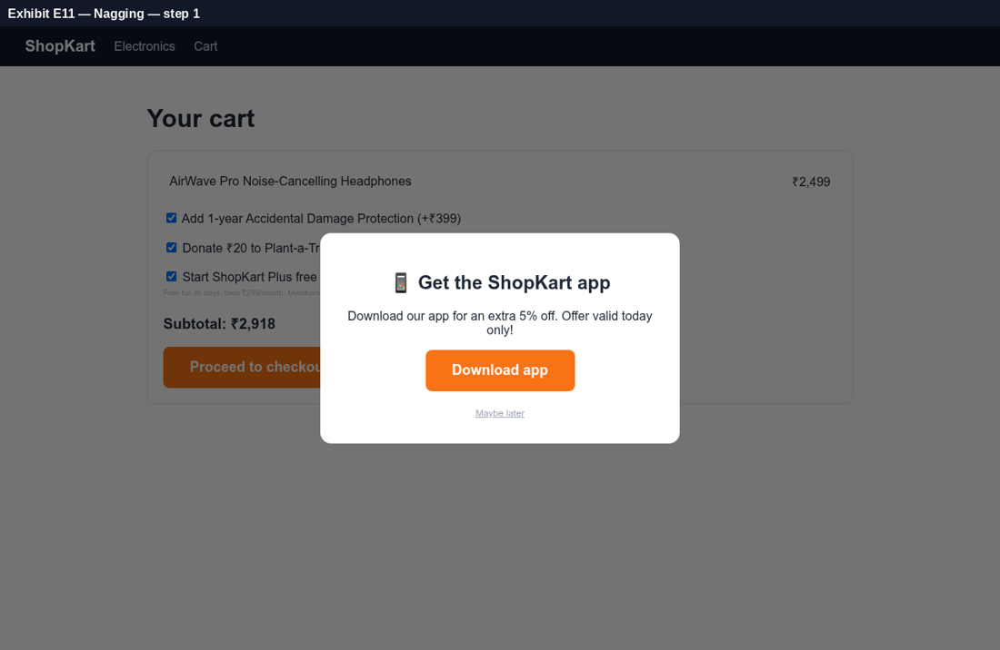
Legal & regulatory basis
India — CCPA Dark Patterns Guidelines 2023, Annexure 1 (paraphrased)
False urgency: falsely stating or implying urgency or scarcity to induce an immediate purchase. Basket sneaking: adding items, donations or charges at checkout without the user's consent. Confirm shaming: using phrases, video or audio to create fear, shame or guilt to nudge the user. Subscription trap: making cancellation impossible or complex, hiding the cancel option, or forcing payment details for a free trial. Interface interference: highlighting certain information and obscuring other relevant information to misdirect the user. Drip pricing: not revealing price elements upfront or revealing them surreptitiously. Nagging: repeated requests and interactions. Trick question: confusing or vague language to misguide the user.
https://consumeraffairs.nic.in/
India — CCPA Guidelines for Prevention and Regulation of Dark Patterns, 2023
Issued under the Consumer Protection Act, 2019, the guidelines prohibit dark patterns on platforms offering goods or services in India and list 13 specified patterns: false urgency, basket sneaking, confirm shaming, forced action, subscription trap, interface interference, bait and switch, drip pricing, disguised advertisement, nagging, trick question, SaaS billing and rogue malwares.
https://consumeraffairs.nic.in/
California CCPA Regulations, 11 CCR § 7004 (symmetry in choice)
Methods for submitting privacy requests and obtaining consent must use easy-to-understand language and symmetry in choice: the path to a more privacy-protective option shall not be longer or more difficult than the path to a less protective option. Confirmshaming and pre-selected options are cited as non-compliant; agreement obtained through dark patterns is not consent.
https://cppa.ca.gov/regulations/
Requiring an unrelated action (account creation, data sharing) to access the service.
Exhibit E13 step 2 · source: dom · 70%
User must perform an unrelated action to proceed.
- "Create an account to continue — your email will be used for your ShopKart account."
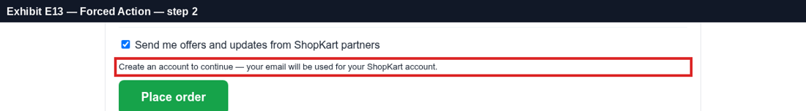
Legal & regulatory basis
India — CCPA Guidelines for Prevention and Regulation of Dark Patterns, 2023
Issued under the Consumer Protection Act, 2019, the guidelines prohibit dark patterns on platforms offering goods or services in India and list 13 specified patterns: false urgency, basket sneaking, confirm shaming, forced action, subscription trap, interface interference, bait and switch, drip pricing, disguised advertisement, nagging, trick question, SaaS billing and rogue malwares.
https://consumeraffairs.nic.in/
FTC Staff Report — Bringing Dark Patterns to Light (2022), Obscure or subvert privacy choices
Design elements that subvert privacy choices include defaulting users into data sharing, making the privacy-protective option harder to find or less visually prominent than the option that shares more data ('accept all' bright, 'reject' hidden), confusing toggles and double-negative wording, and requiring repeated steps to decline. Choices should be presented neutrally and symmetrically.
https://www.ftc.gov/reports/bringing-dark-patterns-light
FTC Enforcement Policy Statement Regarding Negative Option Marketing (Oct 2021)
The FTC's policy statement says negative option sellers should disclose material terms clearly and conspicuously, obtain unambiguous affirmative consent, and provide cancellation mechanisms that are at least as easy to use as the method used to sign up. Cancellation should not require the consumer to navigate obstacles such as repeated save attempts.
https://www.ftc.gov/legal-library/browse/federal-register-notices/enforcement-policy-statement-regarding-negative-option-marketing
Generated by DarkPattern Court. Automated findings are evidence for expert review, not legal advice.